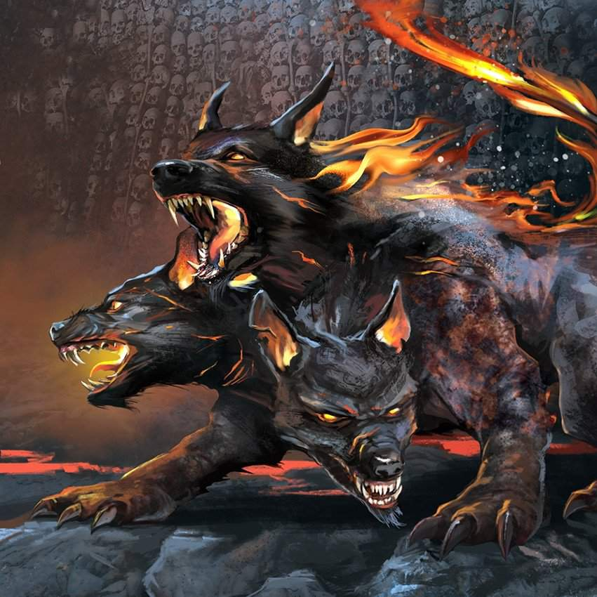
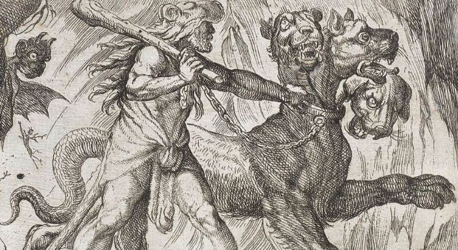

Cérbero é o cão de guarda de Hades, muito conhecido pelos seus aspectos grotescos que remetem às suas três cabeças e à uma cauda de serpente. Ele tinha como tarefa devorar aqueles que ameaçassem a vida e a reputação de Hades.
O cão era acorrentado por seu dono entre as portas, assim impedindo a saída de qualquer alma do inferno. Cérbero deixava as almas entrarem, mas jamais saírem. Quem adentrasse o Tártaro, estava condenado a ficar lá ficar para sempre. Essa criatura era considerado uma cria de Tifão com Equidna.
 
Há uma história envolvendo os doze trabalhos de Hércules, nos quais um deles envolveria sua ida ao inferno para domar Cérbero. Após sua chegada no submundo, apresentou-se para Hades, que se recusou a ceder o seu bicho de estimação para o semideus. Depois de ter sido ameaçado, o senhor do submundo cedeu, mas colocou uma condição para que o cão pudesse ser levado. Neste paradigma, Hércules precisaria domar a fera sem usar nenhum tipo de arma.
Durante o embate com Cérbero, Hércules agarrou o cão pelas patas e passando-lhe os braços pelo pescoço, manteve-o bem preso. Para se proteger, a serpente que assumia o lugar do rabo do Cérbero começou a desferir picadas venenosas no semideus. Mesmo sentindo muita dor, o herói continuou sufocando a criatura até que ela finalmente desistiu e foi dominada.